The reboot of Fertilia is here! We're returning better than ever before.
Featuring: a new map, full content reset and a handful of new content drops!
Added
New Map
Featuring a beautiful and natural map, at a 50% size increase!
Includes a new Main Island, PvP Island and outer crop islands.
Hybrid Machine 🧬
Chemically engineer hybrid crops!
Combine different crops for new HYBRID VARIANTS!
Crops here only drop Founder Keys and event items!
The Founder's Key is used on the new Founder's Growth Crate!
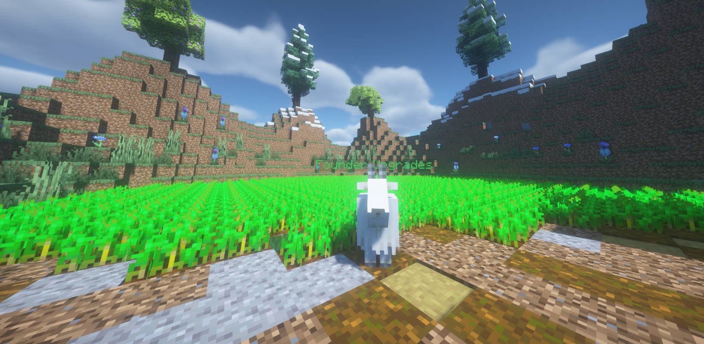
Founder's Growth Crate
Grow your crate from Sprout to Enderbloom!
Your Founder's Growth Crate begins with basic loot.
Upgrade your crate for better loot!
Requires more keys as you upgrade.
Reach ENDERBLOOM I for a chance at MEDALLION CHARM!
Be warned.. the Medallion Charm is limited to 3 opens before it disappears.
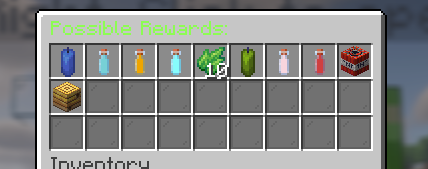
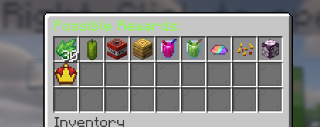
Founder Key
How else do you open it?!
Farm the event island to get Founder's Keys!
Use Founder's Keys to open the Founder's Growth Crate!
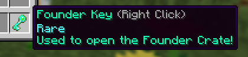
Founder Clover
Another limited drop in the event world!
Required for Founder's Upgrades.
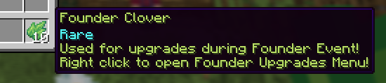
Founder Upgrades
Limited upgrades to boost throughout the event!
Upgrade your crate, random drop chance, crate luck and speed!
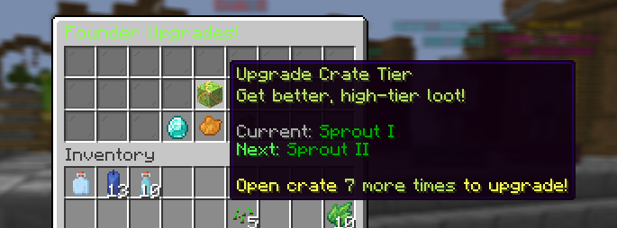
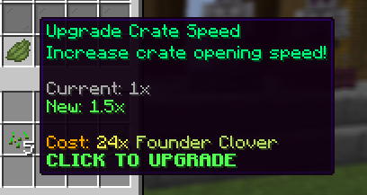
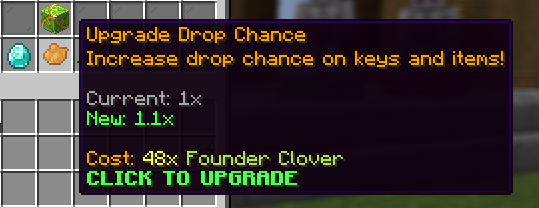
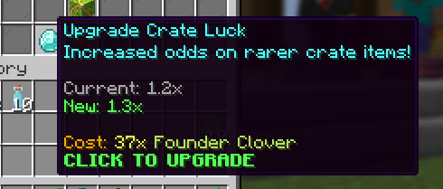
Potion Shrine
Get your hands on these exotic potions!
Includes 2 new superior potions!
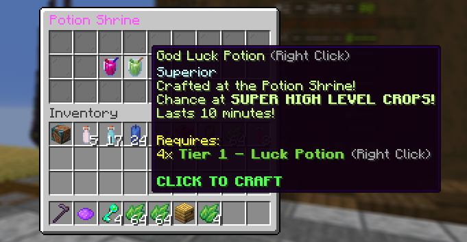
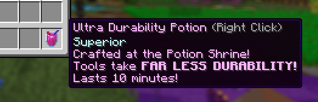
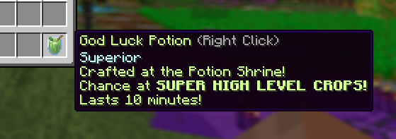
Whack-A-Crop
Like Whack-A-Mole... but more vegetables and vengeance!
Click as many crops as you can in 60 seconds.
Better crops you click are worth more points!
Watch for rotten crops and bombs.. you'll lose points!
Every new personal best yields free rewards!
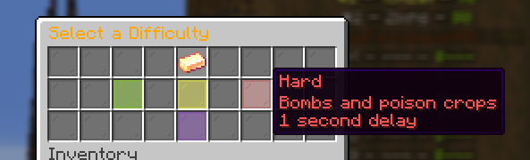
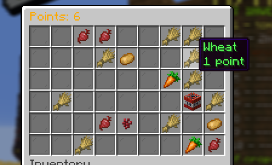
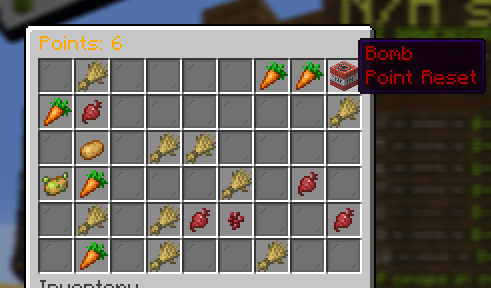
Rainbow Hunter Charm
Rainbow Crops are hitting your farms!
Small chance when converting Rainbows to get the Rainbow Hunter!
When equipped, enables the chance for natural Rainbow Crops.
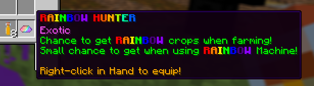
Season 2 Trophy
Woah.. SHINY!
With the season ending, jump in-game to claim a Season 2 Trophy!
Only available for a limited time.
REMINDER: They can be equipped as charms for a 10% discount to Farm Levels.
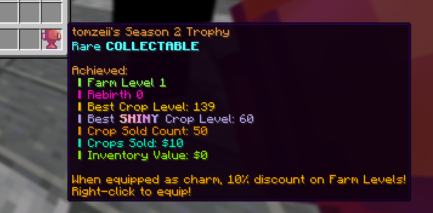
Gem Hoard
Making it rain DIAMONDS!
A new boss.. or hoard has hit the PVP Islands!
They aren't cheap though.
Spawning them requires 50x Tier 1 Diamond Potions
Each will drop 1-5 Diamond Lootbags.
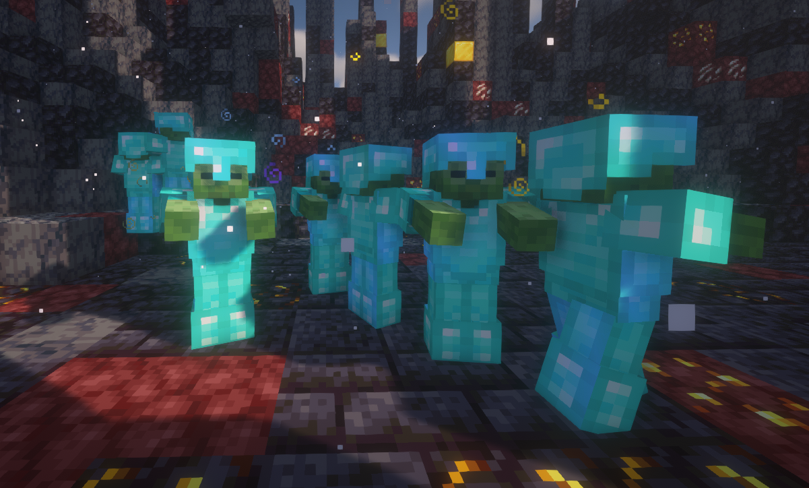
Changed
- Significant buff to Water Sprinkler. Radius is much bigger.
- Added extra weigh to Luck Potions, should see a noticable difference
- Added a lot more items to Farmer Mouldroot's loot table, including Regen I, Strength I, Bronze and Silver crates
- Echoon Shop restocks are no longer broadcasted
- Minotaur boss now drops the correct Warrior lore on charm
- Reduced items received from Composter
- VIP now earns 10% more Gems from Composter
- Diamond Delirium now earns more gems in Composter
- Farm Level required to rebirth has been decreased significantly
- Shady Dealer has been moved to Island 2
- Minotaur Boss has been made slower
- Farmer Mouldroot boss has been made easier
- Decreased Farmer Mouldroot requirement to 50 Wheat
- Added 2 minute cooldown to all bosses globally
Fixed
- Regen Potions are now upgradable in Potion Combine Menu
- New players no longer receive the Season 2 Trophy
- Vote Crate referral fix
- Vanilla drops from Farmer Mouldroot Boss and Reinforcement
~ Thanks all! What should we add next?!